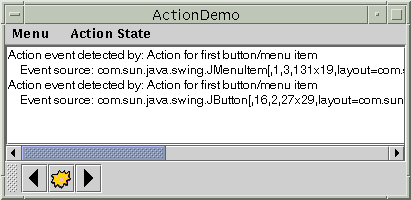

Feedback Form
|
|
Start of Tutorial > Start of Trail > Start of Lesson |
Search
Feedback Form |
If you have two or more components that perform the same function, consider using anActionobject to implement the function. An
Actionobject is anActionListenerthat provides not only action-event handling, but also centralized handling of the text, icon, and enabled state of tool bar buttons or menu items. By adding an
Actionto aJToolBar,JMenu, orJPopupMenu, you get the following features:Here's an example of using an
- A new
JButton(forJToolBar) orJMenuItem(forJMenuandJPopupMenu) that is automatically added to the tool bar or menu. The button or menu item automatically uses the icon and text specified by theAction.- A registered action listener (the
Actionobject) for the button or menu item.- Centralized handling of the button or menu item's enabled state.
Actionto create a tool-bar button and menu item that perform the same function:Action leftAction = new <a class that implements Action>(...); JButton button = toolBar.add(leftAction); JMenuItem menuItem = mainMenu.add(leftAction);For a button or menu item to get the full benefit of using an
Action, you must create the component using theadd(Action)method ofJToolBar,JMenu, orJPopupMenu. Currently, no API beyondaddActionListener(ActionListener)exists to connect anActionto an already existing component. For example, although you can add anActionobject as an action listener to any button, the button won't be notified when the action is disabled.To create an
Actionobject, you generally create a subclass ofAbstractActionactionPerformedmethod to react appropriately when the action event occurs. Here's an example of creating and instantiating anAbstractActionsubclass:leftAction = new AbstractAction("Go left", new ImageIcon("images/left.gif")) { public void actionPerformed(ActionEvent e) { displayResult("Action for first button/menu item", e); } };Here's a picture of a demo application that uses actions to implement three features.
 Here is what the user sees when the "Go left" action is disabled:
Try this:
- Compile and run the application. The source file is
ActionDemo.java. You will also need three image files.
See Getting Started with Swing if you need help compiling or running this application.- Choose the top item from the left menu (Menu > Go left).
The text area displays some text identifying both the event source and the action listener that received the event.- Click the leftmost button in the tool bar.
The text area again displays information about the event. Note that although the source of the events is different, both events were detected by the same action listener: theActionobject with which the components were created.- Choose the top item from the Action State menu.
This disables the "Go left"Actionobject, which in turn disables its associated menu item and button.Here's the code that disables the "Go left" action:
After you create components using anboolean selected = ...//true if the action should be enabled; //false, otherwise leftAction.setEnabled(selected);Action, you might well need to customize them. For example, you might want to set the tool-tip text for a button. Or you might want to customize the appearance of one of the components by adding or deleting the icon or text. For example,ActionDemo.javabutton = toolBar.add(leftAction); button.setText(""); //an icon-only button button.setToolTipText("This is the left button"); menuItem = mainMenu.add(leftAction); menuItem.setIcon(null); //arbitrarily chose not to use icon in menu
The following tables list the commonly usedActionconstructors and methods. The API for usingActionobjects falls into two categories:
Creating and Using an Action Constructor or Method Purpose AbstractAction()
AbstractAction(String)
AbstractAction(String, Icon)Create an Actionobject. Through arguments, you can specify the text and icon to be used in the components that the action controls.void setEnabled(boolean)
boolean isEnabled()Set or get whether the components the action controls are enabled. Invoking setEnabled(false)disables all the components that the action controls. Similarly, invokingsetEnabled(true) enables the action's components.
Creating an Action-Controlled Component Method Purpose JMenuItem add(Action)
JMenuItem insert(Action, int)
(inJMenuandJPopupMenu)Create a JMenuItemobject and put it in the menu or popup menu. See the discussion in this section and in How to Use Menus for details.JButton add(Action)
(inJToolBar)Create a JButtonobject and put it in the tool bar. See the discussion in this section and in How to Use Tool Bars for details.
The following examples useActionobjects.
Example Where Described Notes ActionDemoThis section Uses actions to bind buttons and menu items to the same function. TextComponentDemoGeneral Rules for Using Text Components Uses text actions to create menu items for text editing commands, such as cut, copy, and paste, and to bind key strokes to caret movement. Also implements custom AbstractActionsubclasses to implement undo and redo. The text action discussion begins in Concepts: About Editor Kits.
|
|
Start of Tutorial > Start of Trail > Start of Lesson |
Search
Feedback Form |